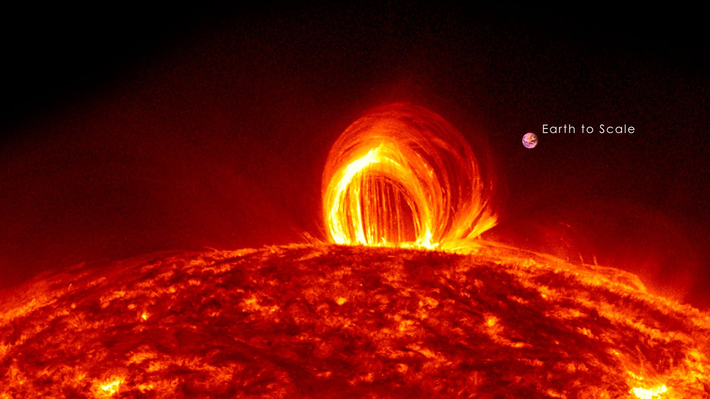

A Nap a Naprendszer központi csillaga. Körülötte kering a Föld, valamint a Naprendszerhez tartozó bolygók, törpebolygók, kisbolygók, üstökösök stb. A Földtől körülbelül 150 millió km távolságra van, ami fénysebességgel 8,3 perc. A Nap tartalmazza a Naprendszer anyagának 99,8%-át, átmérője 109 földátmérő. 73,5%-ban hidrogénből áll, amely a központjában zajló magfúzió során héliummá alakul. Az ennek során felszabaduló, majd a világűrbe szétsugárzott energia nélkülözhetetlen a legtöbb földi élőlény számára: fénye a növények fotoszintézisét, hője pedig az elviselhető hőmérsékletet biztosítja. Éltető ereje miatt a Nap kiemelkedő kulturális és vallási jelentőséggel bír.[3] Fénye és hője mellett különböző tudományágak szempontjából is rendkívül fontos, mert bizonyos jelenségeket nem tudunk mesterségesen előállítani, csak a Napon megfigyelni. Ezek a tudományágak: plazmafizika, magnetohidrodinamika, atomfizika, részecskefizika. A Nap egy G2V színképtípusú csillag, a mintegy 10 milliárd évig tartó fősorozatbeli fejlődésének a felénél jár. A fűtőanyagát jelentő hidrogén elhasználása után, 5 milliárd év múlva vörös óriássá duzzad, majd a külső rétegeiből planetáris köd képződik, magja pedig magába roskadva fehér törpévé alakul.[4] Ez egyúttal a földi élet pusztulását fogja magával hozni.[5] Mivel anyagát képlékeny plazma alkotja, a különböző szélességi körön levő területei eltérő sebességgel forognak; az egyenlítői területek 25, míg a sarkvidékek csak 35 naponként fordulnak körbe. Az eltérés miatt erős mágneses zavarok lépnek fel, amelyek napkitörések és – különösen a mágneses pólusok 11 évente bekövetkező felcserélődésének idején megszaporodó – napfoltok kialakulásához vezetnek.[6] A Nap asztrológiai és csillagászati jele egy kör, középen ponttal: A Nap csillagászati jele. Ez a jel volt Ré ókori egyiptomi napisten hieroglif jele is. A naptisztelet már ősidőktől fogva kimutatható; globálisan istenségként tisztelték és a napkultusz a Föld minden táján elterjedt, egyes régiókban pedig meghatározó kultuszként működött. Napjaink újpogányságában fontos ünnepei szerveződnek a nyári és téli napforduló, illetve tavaszi és őszi nap-éj egyenlőség köré.[7] A decemberi téli napfordulón, a Yule (Jul) ünnepén köszöntik az újpogányok és a mai boszorkányok az újjászülető Napot

A Nap Felépítése
A szilárd felszín hiánya miatt nem lehet pontosan meghatározni, hogy hol húzódik a Nap határa: a középpontjától kifelé haladva folyamatosan csökken a sűrűsége. A Nap sugarát a középponttól a fotoszféráig mérik, mert ez a legkülső olyan réteg, ami még elég sűrű ahhoz, hogy ne legyen átlátszó.

Mivel anyagát képlékeny plazma alkotja, a különböző szélességi körön levő területei eltérő sebességgel forognak; az egyenlítői területek 25, míg a sarkvidékek csak 35 naponként fordulnak körbe. Az eltérés miatt erős mágneses zavarok lépnek fel, amelyek napkitörések és – különösen a mágneses pólusok 11 évente bekövetkező felcserélődésének idején megszaporodó – napfoltok kialakulásához vezetnek
Információk a Naprór
| Átmérő | 1,392·106 * km |
|---|---|
| Kerület | 4,373·106 ** km |
| Lapultság | 9·10–6 |
| Felszín | 6,09·1012 *** km² |
| Térfogat | 1,41·1018 **** km³ |
| Sűrűség | 1,408 g/cm³ |
| Felszíni gravitáció | 273,95 m/s² |
| Szökési sebesség | 617,54 km/s |
| Hőmérséklet | |
| Felszín | 5780 K |
| Korona | 5·106 K |
| Mag | ~13,6·106K |
| Földtől mért távolság | 149 600 000 km |
|---|---|
| Tömeg | 1,989E30 kg |
| Felületi hőmérséklet | 5 778 K |
| Felszín | 6,09·1012 *** km² |
| Kor | 4,603E9 év |
| Sugár | 696 340 km |
| Színképosztály | G2V |
| Holdak | 3122 Florence, 90482 Orcus |
| Forgási periódus | 25 nap 9 h 7 min 13 s |
| Forgási sebesség | Egyenlítőn 7174 km/h |
| Távolság a Tejútrendszer magjától | 26 000–28 000 fényév |
| Mégtöbbet a napról | itt |